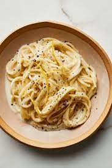

Pasta

The name Pasta Puttanesca loosely translates to “whore’s pasta.” Why? Because it’s delicious and cheap… no, I’m kidding (kinda). The theory is that this simple dish was a favorite of people who were so dirt poor that they had to live in (and work) the streets. It uses ingredients that were inexpensive and abundant in Italy back in the day, like olives, anchovies, pasta, tomatoes and capers.
Ingredients
- olive oil
- garlic
- pepper
- onion
Steps
- Dice the onion and mince the garlic. Add the olive oil, onion, garlic, and anchovy filets to a large skillet. Sauté the ingredients over medium heat until the onions are soft and the anchovies have dissolved.
- Bring a large pot of water to a boil over high heat. Once rapidly boiling, add the spaghetti and continue to boil until the pasta is tender (about 7 minutes). Reserve about 1/2 cup of the starchy pasta water before draining the past in a colander.
- Add the cooked and drained pasta to the puttanesca sauce in the skillet (or if your skillet is not big enough, add them both to the large pot used to cook the pasta, heat turned off). Stir to combine the pasta with the sauce. If the pasta becomes dry, add a splash or two of the reserved pasta water. Serve hot.
Return to main page